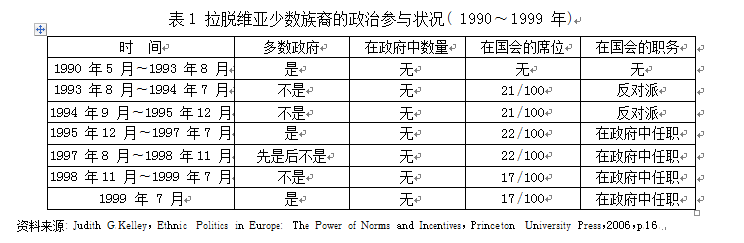
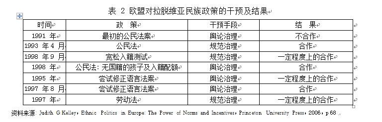

收录于合集
青 觉
中央民族大学中国民族理论与民族政策研究院院长、教授，主要研究民族理论、民族政治和民族问题
【内容提要】面对世界上越来越多的民族冲突，各地区的区域组织利用地区规范、信息、资源和 集体行动等方面的优势，通过规范管控、舆论压力管控、经济制裁、协商管控、资源管控、第三方监 管、武力干预等七种机制，实施了颇有成效的管控。欧盟、阿盟、非盟和东盟等区域组织在管控民族 冲突中积累了许多成功的经验，这显示出区域组织在民族冲突管控方面日益突出的作用。中国可 以借鉴相关经验，充分利用已有区域组织并倡议建立新的区域组织，同时加强与域外区域组织的合作，建构起具有自身特色的区域问题管治模式，以对和谐族群关系实行网络化的保障，促进地区安 全与稳定。
【关键词】民族冲突 区域组织 规范管控 国家治理
自二战结束以来，世界范围内的战争多数是国家内部的暴力冲突，这在冷战结束后凸显，且呈现出以族群冲突、宗教冲突为主要内容的特征。据美国和平研究所统计，1990 ～ 2016 年国际间共发生116起军事冲突、涉及60 个国家，造成523.85 万人死亡，其中因族群冲突而死亡的人数为275．95 万人，涉及50 个国家。据联合国难民署统计，2017 年难民高达 2250万人，其中 55%来自民族冲突盛行的南苏丹、阿富汗和叙利亚三国。民族冲突造成一些国家国内失序、百姓流离失所，也成为地区、世界不稳 定的源泉。为此，对民族冲突加强分析、研究，以便实施有效管控，一直是国内外诸领域学者孜孜以求之事。总的说来，西方学者大多主张以西方式民主制度管控族群冲突，即在多民族国家内建立各个民族权力共享的民主政治体制。国内学者重视民族区域自治制度的作用。但是，学界对于民族冲突及其管控的研究主要聚焦于国家层面，对区域组织、国际组织的关注则不多。当前，全世界、国际社会没有一个国家和国际组织居于统治地位，即使是美国也 难以独自充当世界警察。权力的真空、现实的需要，使区域组织在维护地区和平、稳定和促进地区发展等方面日益发挥突出作用，从而逐渐成为世界政治舞台上的重要力量。随着区域组织的发展，关于区域组织研究的区域主义理论、区域间主义理论兴起，进而推进地区内外冲突管控、综合治理的机制建设。因此，探讨区域主义和区域组织在民族冲突管控中的作用，对于解决民族冲突、增进区域国家间的信任与合作都具有积极的借鉴意义。
一
区域组织 是指由至少两个以上具有某种意义同质性和内聚力的国家构成、具有内部相似性和连续性且有一定界限的共同体，如欧洲联盟、东南亚国家联盟( 东盟) 、美洲国家组织、非洲联盟( 非盟，原非洲统一组织) 、上海合作组织、阿拉伯国家联盟( 阿盟) 以及北美自由贸易区等。这些区域组织在有关地区的经贸合作、政治稳定和安全保障方面发挥着日益重要的作用。对于民族冲突的管控是这些组织的内容之一，如美洲国家组织对海地与尼加拉瓜间、洪都拉斯与萨尔瓦多间冲突的调解，非盟在布隆迪、利比里亚、索马里和塞拉利昂等国家冲突中的斡旋作为以及东南亚国家联盟对缅甸民族冲突的管控等，即体现了区域组织的管控作用。
区域组织之所以能够发挥作用有三方面的原因。其一，区域组织具有联合国安理会授权的合法性。 《联合国宪章》第 52 条中规定，地区争端首先要由地区来解决，若失败可再诉诸联合国安全理事会; 第 53条中规定，联合国安理会可授权地区组织和机构来维护地区和平与安全。冷战结束后，联合国安全理事会提出: “安理会将一如既往地维护世界的和平与安全。但是，地区组织作为联合国分权机构，不仅要积极与联合国合作，减轻联合国负担，而且要更加积极地深入参与地区和平和安全的维护和建构。”其 **二，制度主义是区域组织发挥作 用的理论基础。**现实主义认为，国家作为唯一理性的行为体，在国际社会的无政府状态下，为了求得生存和发展，只能通过自助来追求利益的最大化，国家间冲突是常态，而合作几乎是难以实现。在这种状态下，国际组织作为一个干预变量只是超级大国统治世界的工具，不可能独立地实现其意志。20世纪70年代至 90年代，区域组织不断发展、壮大，自由制度主义者发现: 无政府状态并不是绝对的，国际社会是一种国际无政府状态和国内垂直政府体系的混合，是一种综合性的政府状态。 由此，国家不再是唯一的国际行为体，一些国际组织也日益发挥重要作用，成为另一个重要的行为体。国家也不再把安全作为唯一的目标，而越来越关注经济、发展、财富和环境健康等目标，而国际组织、地区组织能够在这些领域实现国家间的合作。 其三，区域力量的增长是区域组织发挥作用的现实基础。 “亚洲的事情由亚洲人来管控”，“非洲的事务以非洲的方式来处理”。区域组织加强对民族冲突的管控不只是有助于除消除民族冲突的负面影响，还可维护地区统一、强化区域意识，防止域外大国插手地区事务，并以一个声音和整体姿态在国际舞台为其地区争取更多的利益和发展空间。
有鉴于此，区域组织作为各主权国家让渡主权的产物，在维护地区稳定、经贸合作、人权保护等方面具有独特的责任和义务，这使其能够在民族冲突管控中发挥作用。从世界各地区的实践看，区域组织管控民族冲突的机制主要有七种机制或途径。
第一，规范管控。 区域组织在成立和壮大的过程中制定了一系列规则、规章和制度，形成了区域内特定的规范和文化。如欧盟在成立之初强调意识形态的一致性、社会结构的多元性、政治体制的民主性、经济的自由化和市场化，在东扩中也要求新加入国家满足下列条件: “具有确保民主、法治、人权和尊重并保护少数民族权利的稳定制度、具有行之有效的市场经济和应对欧盟内部竞争压力和市场压力的能力、具有履行成员国义务的能力，包括恪守政治、经济和货币联盟的目标”等。正如制度主义者所指出的那样，区域组织通过这些规章、制度能够通过提供信息，降低交往过程中的不确定性，协调各方实现集体行动，这便是对奥尔森“集体行动困境”的解决之道。通过这种集体行动能够实现区域利益的最大化，也能很好地规避集体中搭便车的行为，还能实现对集体中较弱个体的救助，如欧盟在希腊债务危机中的互助行为。
区域组织对民族冲突的管控是通过基础规范和 组织规范加以实现的。关于前一方面，各区域组织 的基础规范是国家的稳定、民主和人权，它通过区域 组织的各种实践活动内化而为成员国的理念，增进 了民族和解，同时通过切实的优惠政策甚至分权等 民主化措施保护少数族裔的基本权益，满足其政治 诉求。关于后一方面，区域组织通过组织自身的规范，取消存在民族冲突的国家之成员国身份，或者以 此为由拒绝吸纳其加入区域组织。如 1993年，欧盟针对有意入盟的中东欧国家制定了关于少数民族权 利的哥本哈根标准，强调民主、人权和少数人权益等 政治标准，并通过有意入盟国的年度报告、官方报告、联系国官方审查报告评估它们的人权状况，以此 衡量这些国家是否具备入盟条件。这种组织压力成 为有意入盟的拉脱维亚等国改善族群关系的动力， 促其提高了境内俄罗斯等少数民族的政治参与度。在土耳其申请入盟途中，欧盟在与土 1995 年签订的《欧盟—土耳其关税同盟协议》( EU－Turkey Cus- toms Union Agreement) 中明确要求土着手解决库尔德问题，具体要求包括: 土修改 1982 年宪法、加入反对恐怖主义条文，逐步改善库尔德民主党的政治处境以及保障人权等规定。作为回应，土耳其修改了宪法中的相关条款。之后在土 1998、1999、2000 和 2001 年提交给欧盟的报告中，欧盟均以哥本哈根标准要求提高库尔德人的人权保护标准。这在很大程度上直接促 使土耳其政府加大力度允许库尔德人使用其母语、提 高库尔德人政治参与等方面的权利。 第二，舆论压力管控。 国家的软实力是相对于硬实力而言的，主要指通过自身意识形态、文化、政策等方面吸引力间接影响他国行为的能力，其作用虽不像硬实力来的那么强硬、直接但却深远，是大国外交中不可或缺的部分。而民族冲突作为一种非正常性行为状态无疑会削弱一国的软实力。区域组织通过将这种反人类行为的冲突区域化、全球化，进而在区域间、国际上制造强大的舆论压力，让有关国家的形象和地位受损，以致不得不采取改变、化解民族冲突的行动。在这一过程中，区域组织采取的管控方式主要包括四类: “信息政治”，即将民族冲突的相关信息准确有效地公之于区域或国际范围内;
“象征政治”，即通过一些关于民族冲突的象征、行动和真实故事向更多听众传达冲突的危害; “杠杆政治”，即呼吁区域内强国干预民族冲突; “责任政治”，即努力让区域内强国贯彻管控民族冲突的政策和原则。 西方学者穆迪( Amanda M． Murdie) 和戴维斯( David Ｒ． Davis) 考察了包括区域组织在内的 400多个国际人权组织，他们发现这些组织通过施加国际舆论压力，的确有效地促使有关国家政府采取了改善少数民族权利的积极措施。
第三，经济影响管控。 这主要是指根据相互依 存度实行相应的经济制裁。随着全球化、区域化形 势的发展，各国在经济上形成了深广的相互依赖关 系。这种相互依赖的状态和程度是国际社会权力的来源，相互依赖的程度主要由敏感性和脆弱性来衡量，如 1973年石油危机对美、欧和日本的影响问题， 美国的敏感性要小于日本和西欧，因为其国内资源 丰富、可替代资源较多，而日本则相反; 同样，美国的脆弱性也要小于日本，因其能源和工业体系都较为发达，所受损失也较少。这就是说，在相互依赖状态下，敏感性和脆弱性较小的国家可以通过调整对外政策来影响敏感性和脆弱性较大的国家，借以在国际范围内实现其意志。20世纪50年代以来，区域组织从兴起走向长足发展，现已由只注重区域集体安全的旧区域主义转向注重经贸、社会和文化等综合性发展的新区域主义。区域组织在区域内的活动更多表现为经济往来，如东南亚国家联盟内部的贸易额始终占这些国家贸易总额的约 1/4。这些区域组织通过这种经济相互依赖关系协调区域内国家实现对区域内民族冲突国家的经济制裁等方式，迫使后者对民族冲突实现有效的管控。如进入新世纪以来，非盟根据《非洲联盟组织法》至少对存在族群冲突的10个成员国进行了经济制裁: 中非( 2003年 3 月～2005年 6月和 2013年 3月至今) 、多哥( 2005 年 2月～5月) 、毛里塔尼亚( 2005年8月～2007年 4 月和 2008年8月～2009年 6月) 、几内亚( 2008年12月～2010年 12月) 、尼日尔( 2009年8月～2011年3月) 、马达加斯加( 2009年 3月至今) 、科特迪瓦( 2010年～2011年 4月) 、几内亚比绍( 2012年4月至今) 、马里( 2012年 3月～2012年10月) 和埃及( 2013年 7月至今) 。一些区域组织在适当时候还以同样方式对域外民族冲突实行干预式管控。
第四，搭建平台促和谈的协商管控。 民族冲突的原因甚多，其中相互仇视的民族间竞争是主要原因之一。一方势力的增强会引起另一方的恐慌，进而也不断壮大势力，最终形成安全困境。这种安全困境的不确定性便成为民族冲突的“阿喀琉斯踵”。区域组织可以通过搭建平台，敦促冲突双方坐之在一起进行协商、谈判，通过信息的透明传递，降低冲突双方的恐惧感和安全不确定性，从而实现和解。例如，自 2002年起，非洲联盟通过建立和运用非洲维和与安全架构( African Peacekeeping and Se- curity Architecture) 平台，多方调解，缓解甚或化解了达尔富尔、尼日利亚、塞内加尔等多国的族群冲突。第五，提供资源，支持一方结束民族冲突，重塑地区秩序。区域组织在民族冲突的管控中不得不权衡各方利益。面对冲突的双方，区域组织出于地缘政治、经济等因素的考量，选择支持一方，通过提供各种资源支持，使其在冲突中取得胜利，如欧盟对于 乌克兰政府军的支持、东南亚国家联盟对于缅甸政 府军的支持等。而冲突各方接受地区组织的安排而结束冲突、达成和平协定，只是第一步。此后，仍然 需要动用多种资源以保证和平协定的执行，促进和 监督政府重组和解除武装派别。战后的饥荒解救、难民遣返和家园重建都需要巨大的资源支持。 如2017年，刚果民主共和国与邻国新的族群冲突使该国的难民总数增加到 300多万人，欧盟为其提供了1．63 亿欧元的紧急人道主义援助。
第六，与联合国或大国合作，组建第三方力量 ， 参与监督、调停。民族冲突尤其是暴力民族冲突的 管控是一项艰巨的任务，区域组织有时候不得不借助联合国或某些大国的力量以实现有效管控的目 的。这种联合组建的第三方力量主要通过消除民族 敌对情绪、仇恨，结束冲突，在冲突地区恢复秩序，建 立安全保障区，建立边界检查站和边界巡逻等方式 实现对民族冲突的控制和管控。如 2012年 12月， 非洲联盟经由联合国的授权，组建了非盟领导、3300 人组成的一支武装力量以帮助马里重建军队，加强 了马里政府在北部的控制力，并起到了保护平民等 积极作用。
第七，武力干预。 当以上措施均难以奏效的情况下，区域组织可能出于集体安全的考虑、援引集体防御的相关法律条款，对民族冲突进行直接的武装干预，如 1999 年北约在科索沃危机中的武装袭击等。
可见，世界各地区、各国家民族冲突的管控机制有很多种，它们各有特色和长处，甚至可以相互补充 或者层层递进。有的民族冲突只需要规范管控，有 的需要冲突双方的和平谈判，有的则是以暴制暴，而 大多数则需要多管齐下、相关方共同管控才能奏效。
二
区域组织对民族冲突的管控在实际操作中则要复杂、艰难得多。它既要充分考虑有关国家、民族的具体情境，更受制于区域组织的功能和能力，涉及机构设置、组织资源和内部民主状况等因素。加之区域组织是一种国家让渡主权的产物，因此其在域内和域外的管控上是有所差别的。这突出体现在亚非拉几个大洲主要区域组织对族群冲突的管控作用中。
(一) “欧盟模式”。 欧盟从欧洲经济共同体演进而来，冷战后却越来越积极地介入民族冲突的管控之中，并形成了学界所称的“欧盟模式”。据统计，2003 年至今，欧盟实施19 次民族冲突的管治行动。拉脱维亚案例可以说是这方面的典型。拉脱维亚历史上曾是独立国家，在一次大战结束初期和二次大战期间先后被德国吞并、被苏联占领。二战后苏联移入大量的俄罗斯族人，并将大量的拉脱维亚人迁移到西伯利亚。到 1989年，拉脱维亚本族人占比已由 1943年的 82%降至 52%。苏联解体后拉脱维亚获得独立，便不得不面对这些非拉脱维亚人的公民身份、居住、教育、选举和语言等一系列问题的挑战。民族间的张力随之凸显。苏联多年统治压抑下的拉脱维亚人民族主义热情迸发出来，极少有人提出对俄罗斯族人的积极政策。如其公民法中不承认俄罗斯族裔的公民身份，这些人在苏联解体后便成为无国籍者，在公民权益上受到严格限制，其中许多人在苏联解体时投票赞成独立、如今觉得受到了欺骗。同时，拉脱维亚人强烈希望重塑自身国家的文化和语言认同。所以在面对国际社会提出归化俄罗斯人的政策要求时，拉脱维亚政界无人不表示强烈反对，如祖国与自由党( Fatherland and Freedom) 和拉脱维亚独立运动党( Latvian National Inde- pendence Movement) 都极力反对俄罗斯人归化到拉脱维亚，它们主张确保拉脱维亚族人口不低于全国人口的75%，即使民族主义情绪不是那么严重的拉脱维亚之路党( Latvia’s Way Party) 也反对俄罗斯人加入拉脱维亚。因此，以俄罗斯族为主的少数族裔沦为“二等公民”( 如表1 所示) ，他们为了争取正当的合法权益便组织起来进行反抗，在拉引发严重的民族冲突。

但是，在国际社会，作为苏联解体后的国家，拉脱维亚得到西欧等西方国家的青睐。面对该国的民族冲突状况，欧盟通过舆论压力和规范治理两种手段，迫其政府改变歧视性的民族政策。如 1993年欧盟制定针对少数民族权利的哥本哈根标准和按照各种报告评估其人权状况的做法，在相当程度上就是以拉脱维亚这样的中东欧国家为反例的，进而采取了干预行动( 具体效果如表 2所示) 。

( 二) 阿盟的软硬两手。 阿拉伯国家联盟 1945 年成立时宣称的主旨是增强阿拉伯语国家间的合作，并维护地区的集体安全，至今主要作用于打击地区恐怖主义、宗教原教旨主义以及消除石油资源丰富和石油贫瘠的阿拉伯人之间差异等方面。阿拉伯世界长期动荡不止，在冷战后的近 30年来又经历了多次内部战争、两次美西方对伊拉克的战争和自突尼斯蔓延到大多数阿拉伯国家的中东剧变等，当下依然是民族冲突频发、战火不断。正如前尼日利亚驻德国大使奥逊图坤( Jide Osuntokun) 教授所说，当今也门、叙利亚、伊拉克等国家的冲突及其造成的难民正在改变世界，其背后的民族主义或种族主义将带来难以预测的危机。在管控这些复杂的民族冲突中，阿拉伯国家联盟作为一个区域组织发挥着重要作用。
第一，武力干预民族冲突。 主要案例有两个。一是干预伊拉克与科威特的民族冲突。1961年 6 月 2日科威特脱离英国殖民统治而宣布独立，与此同时伊拉克占据了科威特的两个群岛。对此，英国 当局动员军队、准备制止伊拉克，伊由于害怕英国的 军事入侵而承诺只要英国撤军，就放弃打击科威特。1961年10月19日英国撤军，保护科威特的任务由阿拉伯国家联盟接任，联盟派出2337人(原计划派出 3000人) 维持科威特的稳定，之后科威特成为阿拉伯国家联盟和联合国的一员，伊拉克于 1963年承认科威特的独立。另一是干预 1975～1976年的黎巴嫩族群冲突。阿盟当时组建了来自利比亚、沙特、南也门、苏丹、叙利亚和阿联酋六国的2．51 万人( 原计划 3万人) 军队，参与维持黎巴嫩的稳定。
第二，以观察员的身份介入民族冲突管控。 叙利亚危机从 2011年起日益向周边国家扩散，威胁到整个阿拉伯世界的和平。阿盟与叙利亚政府于2011年 12月 19日签订协议，并于 12月 26日派遣观察团到叙利亚，通过监督等行动，确保叙利亚各武装力量停止一切暴力冲突，并确保叙利亚政府军和沙比哈( Shabiha) 武装力量撤出城市，同时督促叙政府保障各媒体自由出入其国境。
第三，与欧盟、联合国等区域组织和国际组织合作，共同管控民族冲突。 2018年 3月，阿盟使团( 成员包括约旦、埃及、沙特阿拉伯、摩洛哥、阿联酋以及巴勒斯坦的外交大臣) 与欧盟 28个国家的外交大臣会晤，商讨解决美国总统特朗普单方面宣布耶路撒冷为以色列首都的举动给巴勒斯坦造成危机的事宜。会上两个区域组织一致认为耶路撒冷的首都地位问题只能由以色列与巴勒斯坦两国决定，并宣称会积极介入该争端的解决，以确保该地区的和平。 同时，面对叙利亚危机造成的巨大人员伤亡，2018年 2月25日，阿盟秘书长艾哈迈德·阿布·盖特( Ahmed Aboul Gheit) 呼吁所有在叙的利益相关方严格遵循联合国 2401号决议、在叙实现停火 30天， 同时要求各方力量确保人道主义援助以及国际人权 组织能够进入叙利亚。
( 三) 非盟的多元管治 。非洲联盟的前身是成立于1963年的非洲统一组织。非盟作为一个全非洲性的政治实体，在促进非洲经济发展、保护非洲生态环境、推进非洲民主实践、依法治国、保护人权等方面发挥着作用。 20世纪90年代以来，因殖民遗产、弱民族国家建设、社会多元化以及资源依赖型发展困境等，非洲族群冲突频发。据英国智库( 伦敦) 国际战略研究所( IISS) 统计，2016 年，非洲的索马里、苏丹、南苏丹和尼日利亚因族群冲突而死亡的人数位居全球前十名之内。所幸的是，非洲这两年因族群冲突而死亡的人数在逐年下降，2015 年2．4 万人，2016 年1． 4 万人。非洲联盟在其中发挥了积极的管控作用。
第一，扮演民族冲突管控的政治协调者 。和平与安全理事会是非洲联盟管控和管控族群冲突的主要组织，其主要任务是: 提高非洲的和平、安全和稳定，以确保非洲人民的生命与财产安全，提高人民的生活质量和生存环境，实现非洲的可持续发展; 预防和组织冲突; 缔造和平和冲突后重建以防止冲突重发; 协调非洲大陆各国防止和打击国际恐怖主义; 制定非洲联盟集体防御政策; 维护基本人权。但是，资金限制、族群冲突的跨界支持、成员国联合军事行动的不便等原因造成非洲联盟管控族群冲突的种种困难。为克服困难、有效管控族群冲突，非盟加强了与欧盟、联合国等区域、国际组织的合作，同时与非洲其他次区域组织、国际非政府组织积极协调、合作。如，近几年来，在中非共和国，族群冲突造成 70 万人失去家园，250 多万人需要人道主义援助和保护。联合国人权组织于 2018年 3月 21日就此举行专门讨论，非盟特别代表宣称非盟已力促中非政府与各派武装力量进行对话，最终中非共和国各反对力量同意停火并表示愿意参与该国的和平进程。再如，2003 年，非盟与联合国、欧盟联合行动，对刚果( 金) 族群冲突实行了有效管控。
第二，搭建平台促使族群冲突各方进行和谈。 2003年，达尔富尔地区的政府军与黑人组成的苏丹人民解放军发生族群冲突，造成1万多人死亡、近百万人流离失所。非盟迅速组成调解小组，积极与阿布贾苏丹人进行和平会谈，终于在 2004年 4月 8日签订了《恩贾梅纳人道主义停火协议》( N’djamena Humanitarian Ceasefire Agreement) ，进而促使苏丹政府军与反政府的苏丹人民解放军签订了达尔富尔和平协议。
此外，非盟还与各相关成员国协作，共同打击族群分离势力。2009年 2月，非盟采取行动促使刚果( 金) 和卢旺达联合打击刚果( 金) 的反对派武装力量( FAＲ / Interahamwe) ，同时促使乌干达、苏丹以及刚果( 金) 合作打击一度肆虐中部非洲大片地区的反叛武装力量( Lord’s Ｒesistance Army) ，缓解了当地的动荡局势。
( 四) 东盟的防控结合。东盟的前身是马来亚 ( 现马来西亚) 、菲律宾和泰国于 1961 年 7 月 31 日在曼谷成立的东南亚联盟( 简称“东盟”) ，现已成为囊括区内 10 国、近 6 亿人口的大型区域组织，其国际影响力日益增强，且由政治领域扩大到经济领域， 在政治、经济、社会和文化方面加快了一体化步伐， 冷战结束以后在多边框架下与中国、韩国、日本、印 度、澳大利亚和新西兰等国建成自贸区，焕发出新的 更大活力。为管控民族冲突，东盟系统采取了预防、遏制和终止三种方式，在促进稳定、维护安全方面收 到了比较好的效果。
就预防而言，经过多年的经营，东盟为管控冲突 而进行的制度、机制建设不断取得进展，先后发布或 签署了《巴厘第二协定宣言》《巴厘第三协定》《东盟 灾害管理与应急措施协定》《东南亚友好合作条约》
《东南亚无核区条约》《促进反恐和相互行动的全面协定》《信息交流和建立通信程序协定》等等，逐渐确立起不干涉内政前提下的政治安全机制，对于区域国家内外族群冲突的发生或升级起到了预防作用。面对已经发生和不断加剧的族群冲突，东盟建立起多边机制，加强与澳大利亚、新西兰、中国、欧盟等国家和区域组织的合作，采取联合管控行动。如2016年 10月爆发的缅甸若开邦罗兴亚人与佛教徒间的冲突已造成70 多万难民，4．37 万人丧生。东盟起初由于奉行互不干涉内政的原则而没有直接介入冲突，随着冲突的加剧和致死人数增多而介入，并协同联合国以及域外国家展开行动。不久前，东盟与澳大利亚举行特别峰会，澳大利亚承诺向罗兴亚人提供人道主义援助以协助缅甸解决这一危机。
与此同时，东盟加强了成员国之间的协调，以谋 求共同管控民族冲突。以罗兴亚危机为例，从 2017 年 8月开始，先后约有 70万难民涌入孟加拉国考克斯的巴扎尔地区。加上之前的21． 3 万难民和季风将来、白喉疫情扩散以及约 10万孕妇临产等问题， 致使巴扎尔这个孟加拉国的最贫困地区深陷困境， 急需大量的援助。孟加拉国总理谢赫·哈西娜在与越南国家领导人会晤时称两国共同应对孟加拉国境内罗兴亚难民问题，希望越南能够给予长期的支 持。2018年3月18日，东盟当值主席新加坡总理李显龙呼吁，东盟各成员国共同努力以解决罗兴亚 人的人权危机，因为此次危机已不仅仅是缅甸内部事务，它所造成的难民危机等后果已影响到整个地区的稳定。
区域组织利用地区规范、信息、资源和集体安全等方面的优势，通过调解、协商、制裁、武力干预等机中发挥作用，难以在安全领域中为继”⑥等怀疑论的有力回应。它对于中国等所有多民族国家管理民族 事务、建设和谐民族关系无疑具有积极的借鉴意义。
首先，充分发挥区域组织在族群安全中的作用。 长期以来，中国各民族之间在交流、交往、交融的过 程中形成了美美与共的和谐关系。但是，冷战结束 以来，受全球化大潮和国际环境的影响，境外民族分 离主义、伊斯兰原教旨主义极端思想、恐怖主义三股 势力和境内“东突”分裂势力相互勾结，不断渗入中 国的新疆等地区，严重威胁当地的经济社会发展。⑦这三股势力广泛分布于世界多国，并获得某些国际 政治势力的支持而充当敌对势力的打手，且能跨国 寻求庇护而逃避打击，这就需要不断加强国际合 作。 近年来，中国以上海合作组织为平台，与中亚五国在打击三股势力方面开展了切实合作，取得了 较好成效。基于这种经验，结合区域组织在管控族 群冲突中的有效实践，中国应该进一步发挥亚投行、上海合作组织等区域机构和组织的作用，进而倡议 建立更多的区域组织，力求对和谐族群关系实行网 络化的建设和保障，以促进地区安全与稳定。
其次，加强与区域组织间的合作 。民族冲突的国际化已成为非洲、中东等地区的常态，如叙利亚危机、乌克兰危机、缅甸罗兴亚人与佛教徒间的冲突等等，有关国家管治这些族群冲突时都颇为重视与域外区域组织的合作。这就需要加强区域组织间的协同。中国近年来陆续提出建立“亚太安全合作新框 架”“中国—东盟命运共同体”“中非和平与安全合作伙伴”等倡议，顺应了世界和平发展、合作共赢的潮流。随着国际安全局势以及区域组织安全角色的变化，中国应在传统模式的基础上，探讨与区域组织合作的新途径，如立足“一带一路”倡议，推动与欧盟、非盟、阿盟、东盟等区域组织间的合作。
最后，建构区域组织管控民族冲突的中国模式。 区域组织在民族冲突的管控中虽然有着不可替代的 作用，但也面临一些共性的问题。一是区域组织与 区域大国关系问题，即区域组织如何限制区域大国 在区域组织内部的霸权，如在美洲国家组织管控巴拿马民族冲突时在美国的霸权面前失去了其独立 性。二是尊重民族冲突国家的主权问题。民族冲突多发生于弱国，这些国家没有能力去管控民族冲突。这些民族冲突在历史上均被视为国家内部事务，外部势力不得介入，如今在区域化、国际化形势的影响 下不得不寻求区域组织的介入，但区域组织如何介 入、有无介入的附加条件都是有争议的问题，在一个 区域内难以达成共识。三是区域内的边界争端影响 区域组织的一致行动，如东盟成员国内部的领土争 端一直存在，越南在 20世纪80年代侵略过柬埔寨， 两国至今仍存在着边界问题; 越南与泰国、印尼与菲律宾和马来西亚、马来西亚与菲律宾、马来西亚与新 加坡之间都存在边界或者领土主权争端，这都需要 在合作管控民族冲突时理性应对。此外，区域组织 实施管控的资金来源、行动能力等问题需要通过协 商，求取共识。① 中国可以依靠自身的历史经验，汲取域外区域组织的教训，从更高的战略层面去考量， 放眼更长远的目标，建设起符合中国国情、维护国家 认同且尊重各民族权益、对区域外开放的民族和谐 关系保障机制。
余 论
冷战结束以来，民族冲突具有易破坏性、扩散性 和扩大化的特点，日益成为一些国家的安全威胁。对其有效管控关乎国家、地区的稳定和安全，也影响
世界的和平与发展。但是，目前学界关注的重点是在国内和联合国层面对于民族冲突管控研究的现状。笔者认为，民族冲突的区域管控新模式在深度和广度上都具有一定的新意。在区域主义理论的引领下，充分发挥区域组织的优势，通过其多元的等级机制，可以实现对民族冲突的有效管控。正如区域主义从旧区域主义到新区域主义再到区域间主义的发展历程，区域组织对民族冲突的管控理应并且正在由一元主体发展到多元主体。当然，民族冲突的区域管控模式作为一种新尝试，尤其需要探究何种类型的民族冲突才是区域管控的对象、如何界定区域管控手段的使用时机、何种情形下区域管控能够诉诸武力干预、域内外区域组织协同管控的有效机制能否建立得起来等。另外，区域组织对民族冲突管控的有效性需要客观、辩证地评估，在看到大多数区域管控取得良好效果的同时，也应该注意到一些地区越管越乱的怪象。
总之，民族冲突区域管控模式的建设无疑会是对区域组织管控民族冲突之实践的提升，也将是对区域主义安全理论的新发展，对于民族冲突的实际管控不失为一种较好的方式，因而值得深入研究和实验。
**
**
文章选自《现代国际关系》2018年第4期
编辑：晞哲 米金金